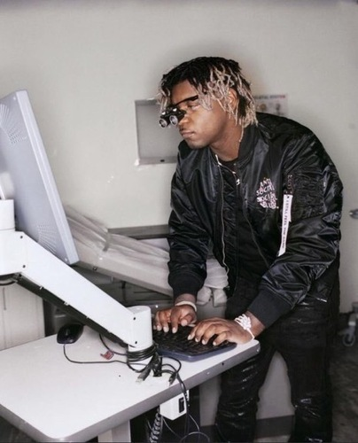
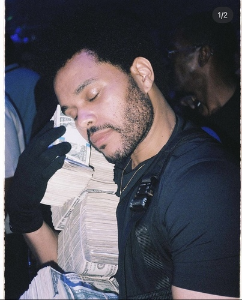
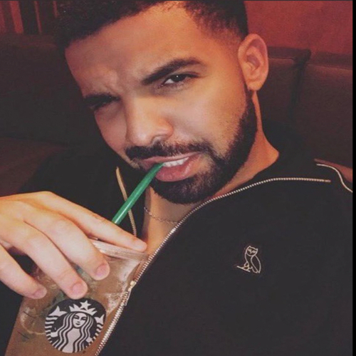
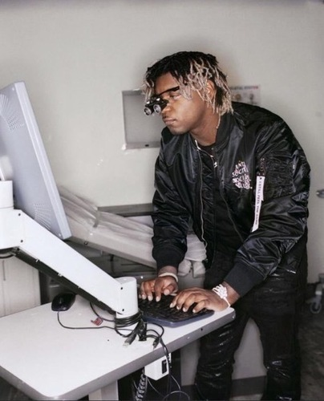
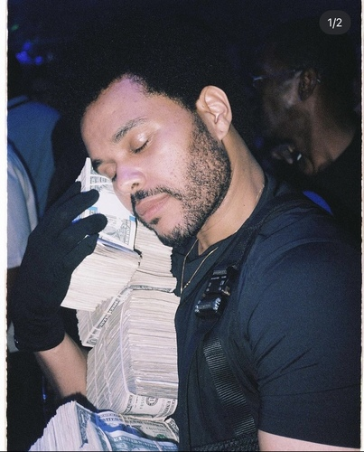
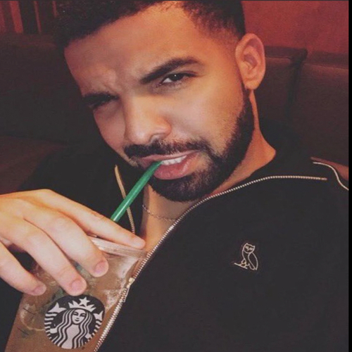

John Doe
My current profession is a barista at the coffe chain Starbucks.Starbucks, a globally recognized coffeehouse chain, provides a unique work experience that revolves around the art of crafting beverages and creating a welcoming atmosphere. Employees, commonly referred to as baristas, play a pivotal role in delivering exceptional customer service. Beyond preparing and serving coffee, baristas engage in meaningful interactions with customers, taking personalized orders and recommending beverages based on individual preferences. Working at Starbucks also involves maintaining a clean and inviting store environment, restocking supplies, and collaborating with fellow team members to ensure smooth operations. The fast-paced nature of a Starbucks store cultivates a sense of urgency, encouraging employees to hone their time-management skills and thrive in a bustling, customer-centric setting.
My last profession was at the retail store Burlington Coat Factory. Where i was a cashier and would work on the floor beautifing the store.Working at a retail store offers a dynamic and fast-paced environment, where employees engage with a diverse range of customers and merchandise. In a retail setting, employees often find themselves multitasking, handling cash transactions, restocking shelves, and assisting customers with inquiries. The job demands strong interpersonal skills, as employees interact with customers daily, addressing their needs and ensuring a positive shopping experience. Teamwork is crucial in a retail environment, as employees collaborate to maintain a well-organized and appealing store layout. Additionally, working in retail allows individuals to develop valuable customer service and problem-solving skills, enhancing their ability to adapt to various situations.
My first job was in high school i obtained this job during the pandemic at a mexican ice cream shop.working at an ice cream store provides a more leisurely and joyous atmosphere, centered around the simple pleasure of indulging in frozen treats. Employees in an ice cream shop, often known as scoopers, focus on creating a delightful experience for customers through the artful scooping of various flavors and the meticulous preparation of sundaes and cones. Interactions with customers at an ice cream store are typically lighthearted and celebratory, as patrons savor their favorite flavors. Employees are tasked with maintaining the cleanliness of the store, handling cash transactions, and ensuring the availability of a wide assortment of flavors and toppings. The environment in an ice cream store fosters a sense of joy and celebration, making it a particularly enjoyable place to work, especially during warmer seasons. All of these jobs have all prepared me in different ways for my long term career.
Experience
Barista
• Created Beverages
• Assisted with drive through
• Experience with cash register and opening
Ice cream shop employee
• Trained on the register
• Key holder
• Would serve deserts and assisted eith recomendations
• Would open and close the establishment
Education
University of California Riverside
Fontana High Scool
Riverside School of Medicine
Portfolio





 